5.3.2. Выбор параметров кривой
5.3.2. Выбор параметров кривой
Параметры эллиптической кривой, такие как 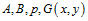 − коэффициенты уравнения, модуль и генерирующая точка, должны быть выбраны всеми участниками до начала информационного обмена. Существуют несколько рекомендованных стандартных параметров выбора эллиптической кривой для реализации криптоалгоритмов. Вообще, задача выбора «хороших» параметров эллиптической кривой является сложной задачей, в общем случае не имеющей решения. Но существует несколько рекомендаций по выбору таких параметров. В качестве модуля для кривых нечетной характеристики необходимо выбирать большое простое число. Типовые рекомендованные размеры модуля для эллиптической кривой, соответствующие им размеры модуля RSA и длина ключа симметричного алгоритма шифрования, обеспечивающие криптостойкость одного порядка, приведены в табл. 5.4, размеры указаны в битах.
При этом, серым цветом выделены параметры, которые можно считать безопасными на современном этапе развития вычислительной техники и математики.
Таблица 5.4
Типовые длины модуля эллиптических кривых
Разрядность модуля ЭК |
Разрядность RSA модуля |
Разрядность ключа блочного шифра |
112 |
512 |
56 |
128 |
704 |
64 |
160 |
1024 |
80 |
192 |
1536 |
96 |
224 |
2048 |
112 |
256 |
3072 |
128 |
384 |
7680 |
192 |
521 |
15360 |
256 |
Кроме модуля необходимо выбрать также коэффициенты a и b в формуле эллиптической кривой  . Как было сказано выше, они выбираются исходя из условия 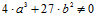 и могут быть выбраны с использованием генератора случайных чисел, и проверкой на соответствие условию. Существует несколько рекомендованных к использованию эллиптических кривых, описанных в различных стандартах. Несколько параметров из этого документа для модулей разной длины приведены в табл. 5.5.
. Как было сказано выше, они выбираются исходя из условия 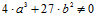 и могут быть выбраны с использованием генератора случайных чисел, и проверкой на соответствие условию. Существует несколько рекомендованных к использованию эллиптических кривых, описанных в различных стандартах. Несколько параметров из этого документа для модулей разной длины приведены в табл. 5.5.
Таблица 5.5
Рекомендованные параметры эллиптической кривой
Длина модуля |
Параметры |
112 |
p=DB7C 2ABF62E3 5E668076 BEAD208B a=DB7C 2ABF62E3 5E668076 BEAD2088 b=659E F8BA0439 16EEDE89 11702B22 |
128 |
p=FFFFFFFD FFFFFFFF FFFFFFFF FFFFFFFF a=FFFFFFFD FFFFFFFF FFFFFFFF FFFFFFFC b = E87579C1 1079F43D D824993C 2CEE5ED3 |
160 |
p = FFFFFFFF FFFFFFFF FFFFFFFF FFFFFFFF 7FFFFFFF a = FFFFFFFF FFFFFFFF FFFFFFFF FFFFFFFF 7FFFFFFC b = 1C97BEFC 54BD7A8B 65ACF89F 81D4D4AD C565FA45 |
Рассмотрим также самостоятельный выбор параметров эллиптической кривой.
Для того, чтобы начать работу с эллиптической кривой, необходимо знать хотя бы одну точку на ней. Это будет образующий элемент группы точек эллиптической кривой, остальные можно получить с помощью операции сложения. Если используется одна из рекомендованных кривых, то целесообразно использовать и рекомендованную образующую точку. Если параметры кривой выбираются самостоятельно, то и точку также необходимо определять самостоятельно. Для нахождения образующей точки эллиптической кривой необходимо выполнить перебор всех возможных значений x < p до нахождения первого значения, которое при подстановке в выражение 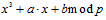 дает квадратичный вычет. Определить является ли число квадратичным вычетом можно с использованием критерия Эйлера: пусть p > 2 − простое число, число a взаимно-простое с p является квадратичным вычетом по модулю p тогда, и только тогда, когда 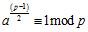.
С использованием библиотеки для работы с большими числами можно определить является ли число квадратичным вычетом с использованием символа Лежандра. Если число является квадратичным вычетом, то необходимо вычислить квадратный корень из него по заданному модулю и таким образом найти точку эллиптической кривой. Это можно сделать с использованием алгоритма Шенкса − Тонелли.
Рассмотрим реализацию этого алгоритма.
Даны число a и модуль p, требуется найти число x такое, что 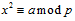 .
1. Найдем случайный квадратичный невычет b по модулю p.
2. Представим число p−1 в виде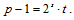
3. Вычислим 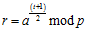 и обратный элемент 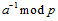.
4. Вычислим 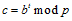.
5. Цикл от 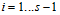.
6. Вычислить 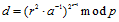 .
7. Если d = −1 (или, что равнозначно d=p-1 ) то 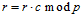.
8. 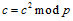.
9. Результатом является r.